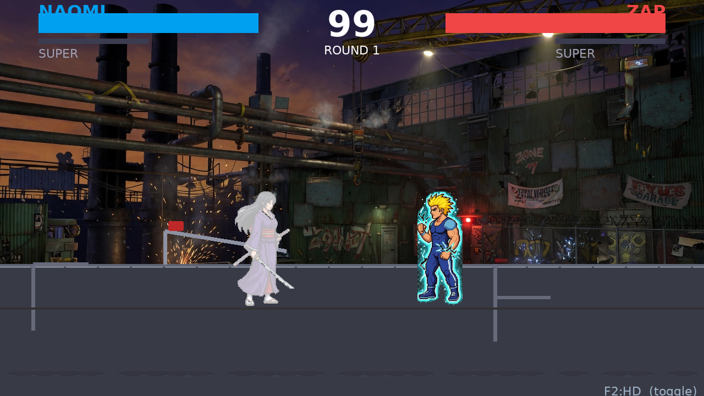
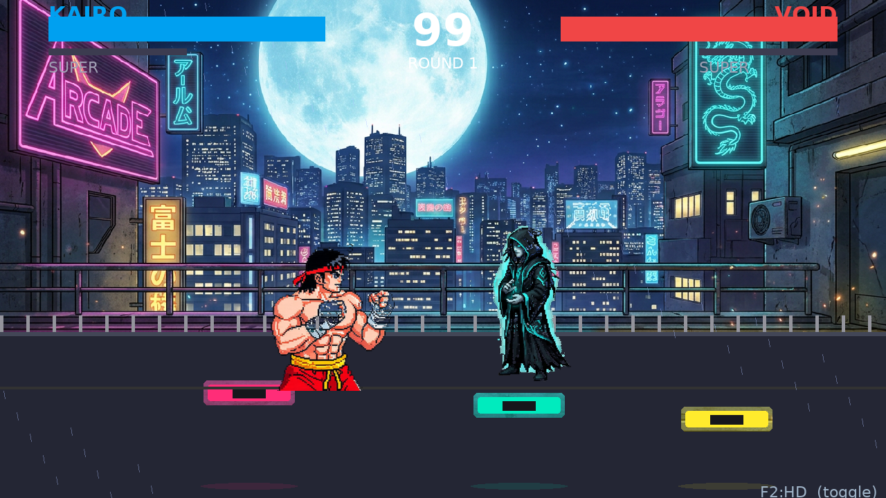
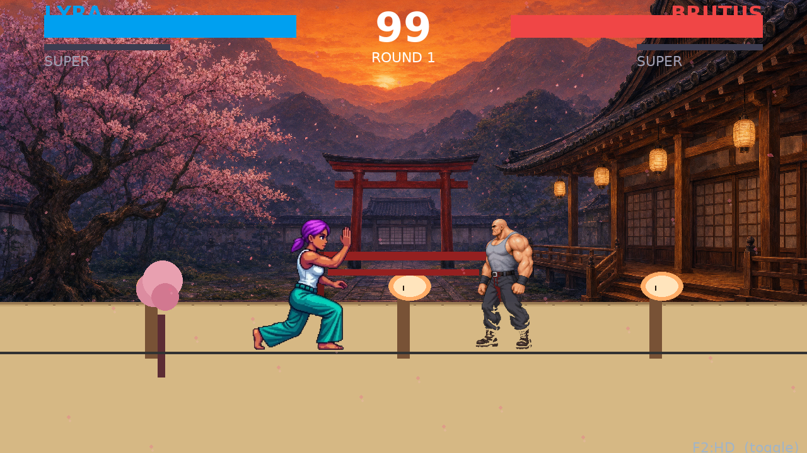
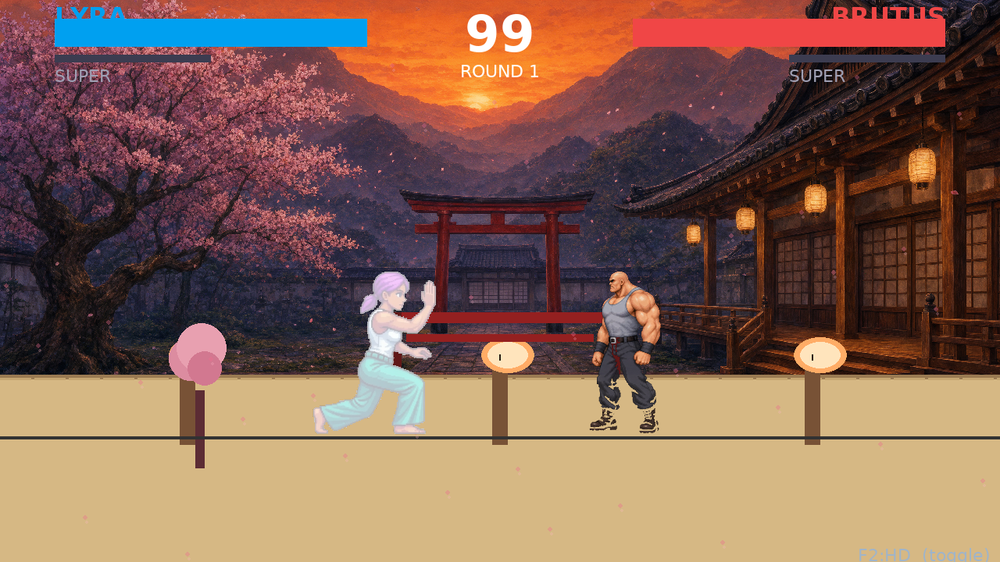
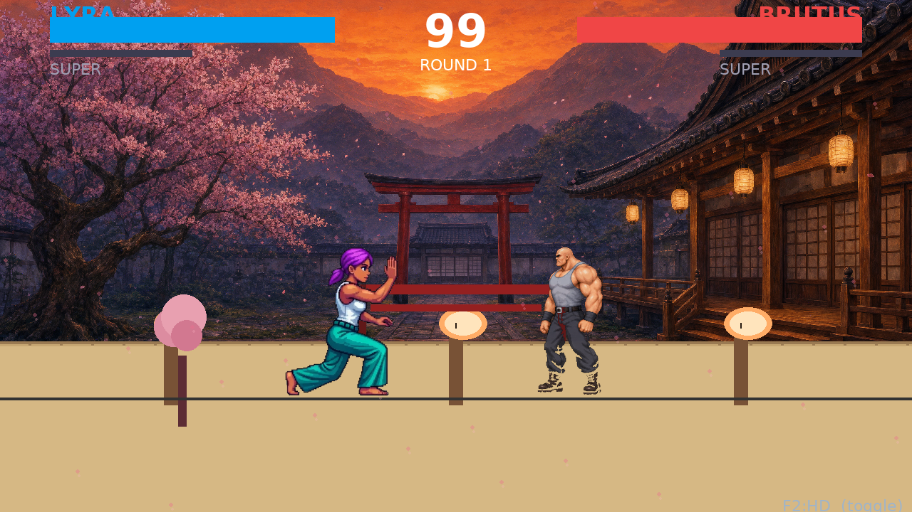
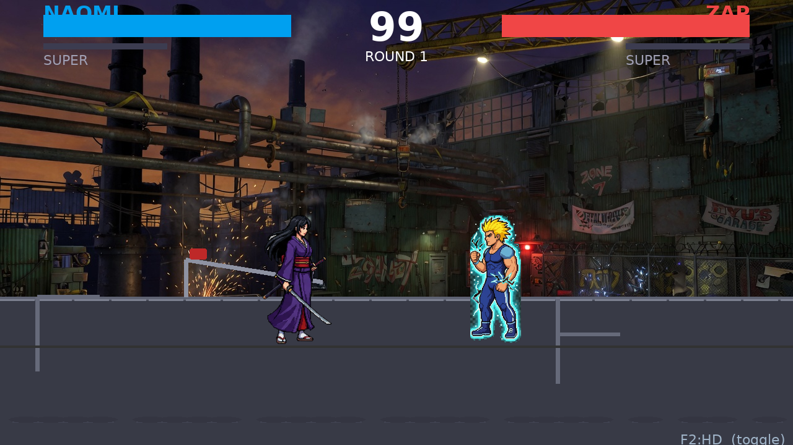

BEFORE NAOMI white box on grey

Old: BLEND_RGBA_ADD made transparent → grey box
AFTER Pale ghost, background stays transparent

NAOMI hit by fireball — lavender tint, stage shows through
You were right: 1) feet were 7px off (KAIRO sinking, VOID floating) and 2) NAOMI/LYRA turned into white box on grey when fireballed. Both fixed:
256-12=244 for all 6. Now KAIRO/VOID/LYRA/NAOMI all stand on same black ground line.BLEND_RGBA_ADD with white 170 on whole 192×256 → transparent pixels (alpha 0) became alpha 170 white box. Fixed: numpy mask alpha>30 only, blend towards white 70% keeping original alpha. Now hit girls are pale ghost with transparent background.Check: Both feet on same line, no sinking. Pause at 2s — KAIRO HP vs VOID block aligned.
Check: NAOMI fireballed at 3-4s — now pale lavender transparent ghost, not white box on grey. ZAP electric aligned.
Check: LYRA kick vs BRUTUS hit — BRUTUS legs now solid (was semi-transparent ghost due to misaligned hit tint).

KAIRO feet below pink platform, VOID above teal
Both feet on 560 ground line, 4px shadow gap consistent
Old: BLEND_RGBA_ADD made transparent → grey box

NAOMI hit by fireball — lavender tint, stage shows through

Lyra hit without flash — but flash made box

Pale pink transparent — no box, even when fireballed

LYRA vs BRUTUS idle — Lyra's back foot and Brutus's boots both on ground line

NAOMI vs ZAP — katana tip and electric feet aligned
All 3 FIXED videos are 60fps, 192×256 per frame, 98 sprites 101-284K each, F2 toggles CLASSIC/HD. Old broken videos: final_hd_gallery.html (5-figure bug) | videos.html placeholders